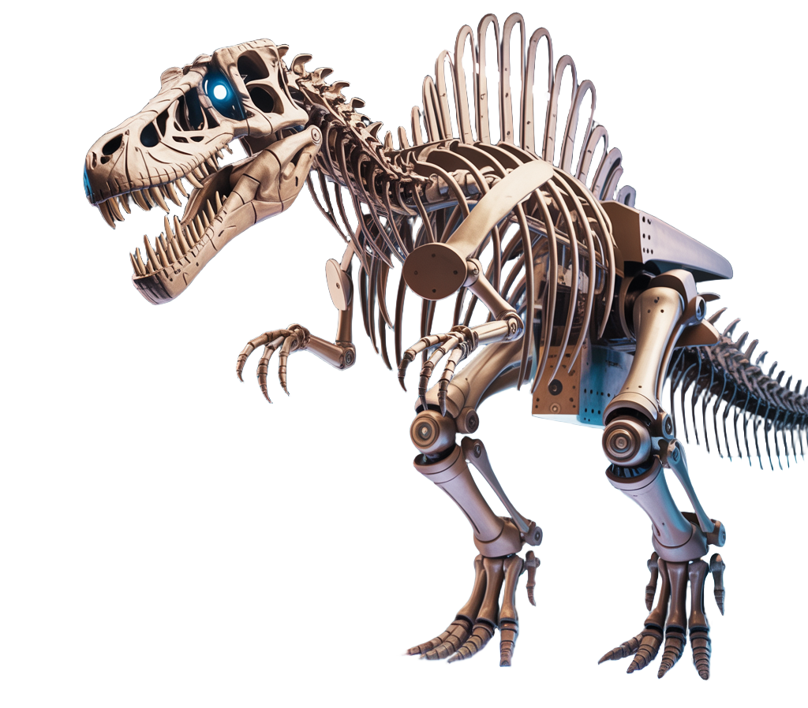

EXPLORE UPCOMING EXHITBITIONS
Live Exhibitions
Step into the past—today
Our latest exhibition is now live, featuring lifelike robotic creatures brought to life through advanced engineering and real paleontological research. Come face-to-face with moving, roaring prehistoric giants, explore interactive displays, and discover how science and imagination revive the ancient world in stunning detail.
Upcoming Exhibitions
Travel back in time—no time machine needed
Archelix invites you to experience our newest exhibition, featuring lifelike robotic creatures powered by cutting-edge engineering and real paleontology. Get up close with roaring, moving prehistoric giants, explore interactive displays, and see how science brings ancient life back to the modern world.